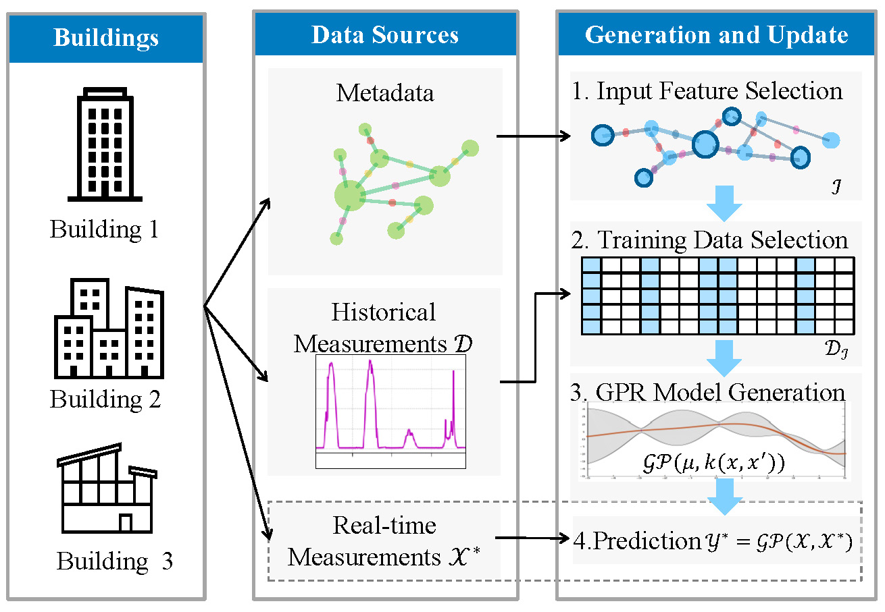

Accurate indoor temperature prediction is key to smart building control, yet standard Gaussian Process Regression (GPR) faces scalability and manual configuration challenges. We apply LoG-GP, a distributed GPR variant, to enable real-time model updates and fast predictions. Through backward selection and sensitivity analysis, we identify minimal input features across building instance types. We propose a metadata-driven workflow that automates feature selection and dataset retrieval. Tested on three building instances, our method maintains accuracy while reducing computational cost. This work advances GPR usability in real-world settings by combining scalability, automation, and domain knowledge for portable and efficient model deployment.
